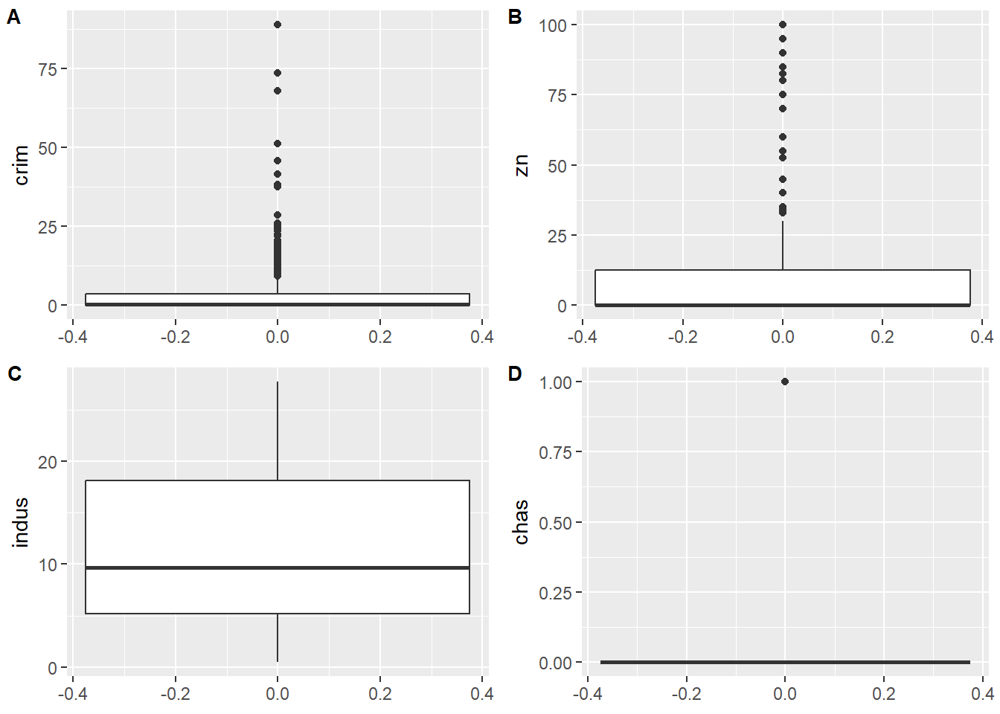
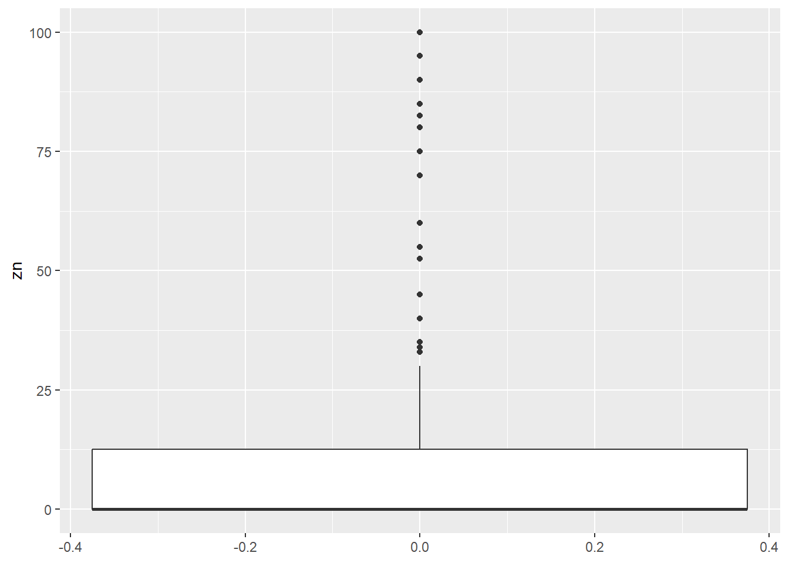
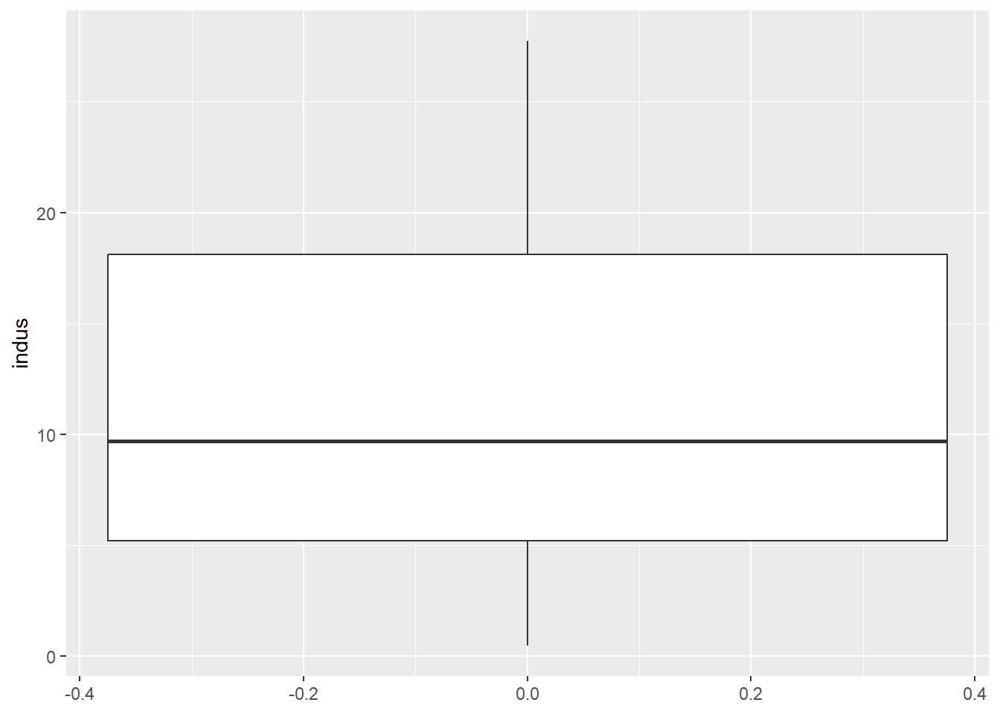
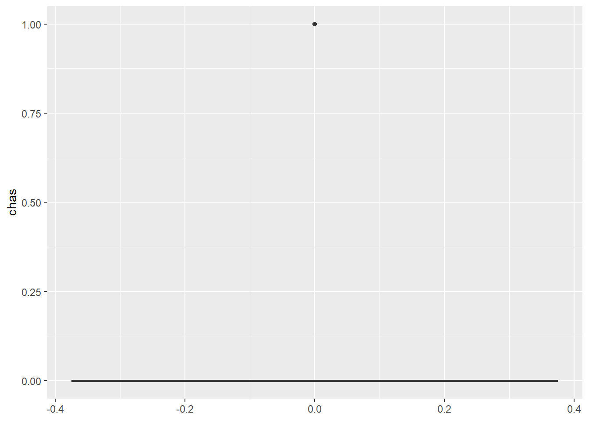
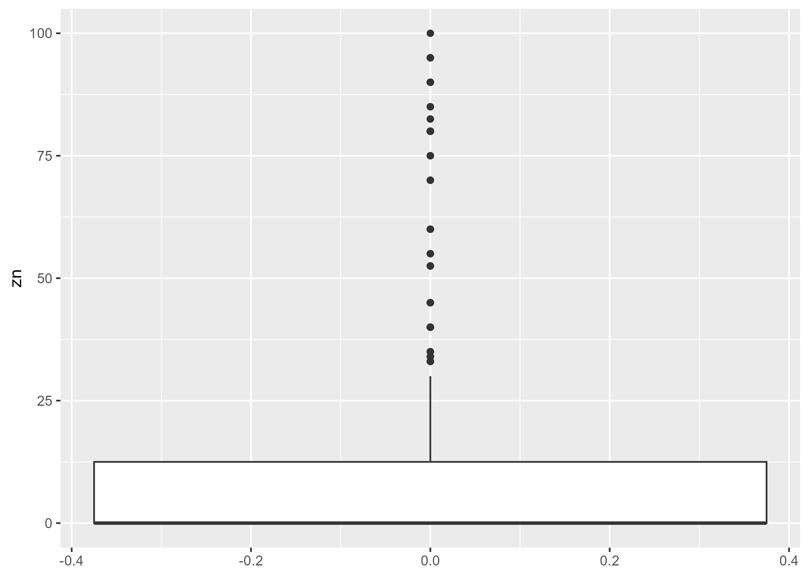
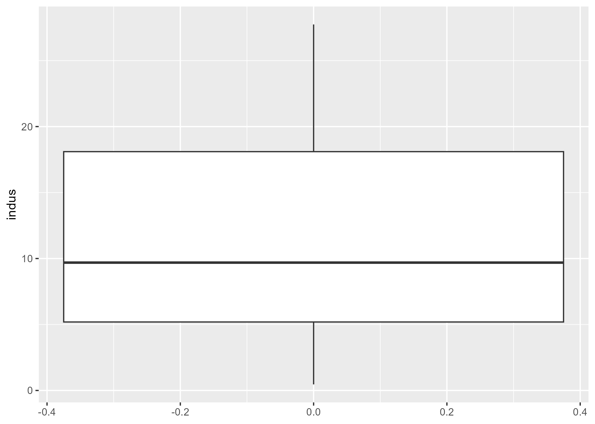
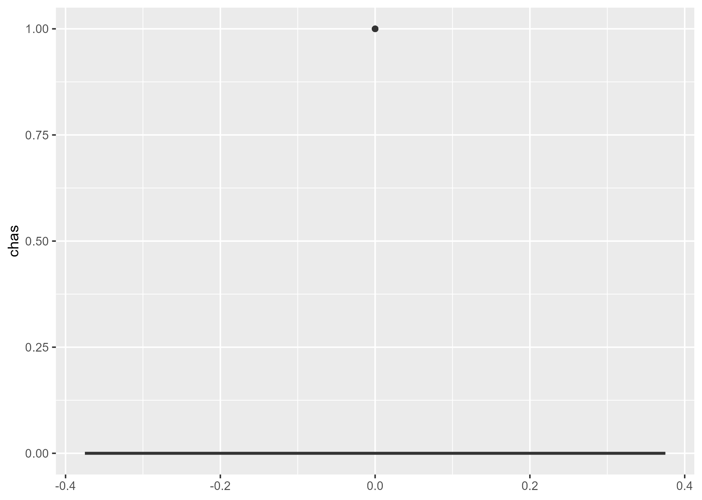
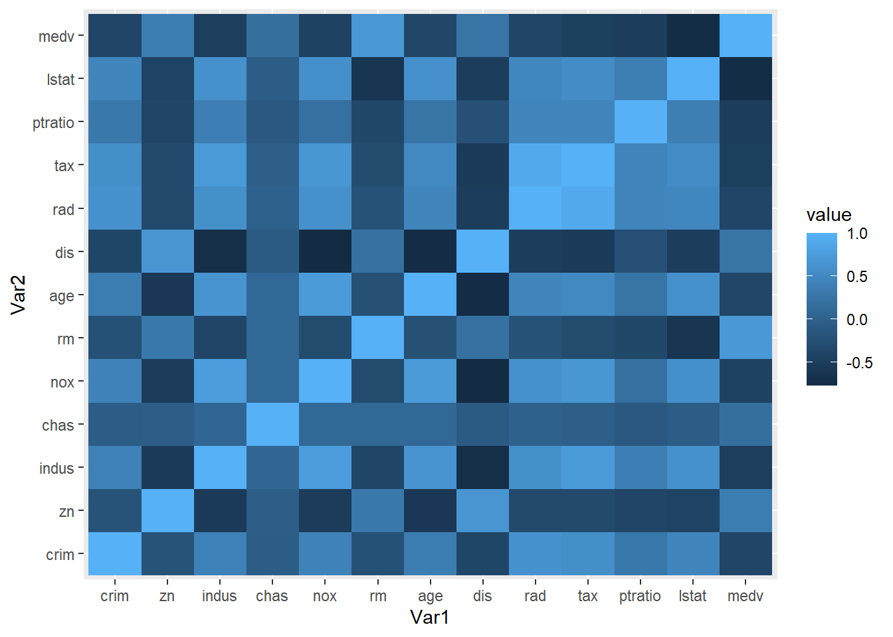
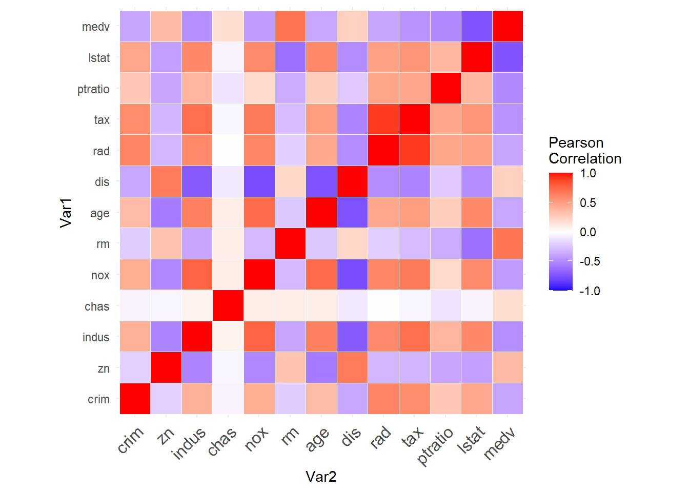
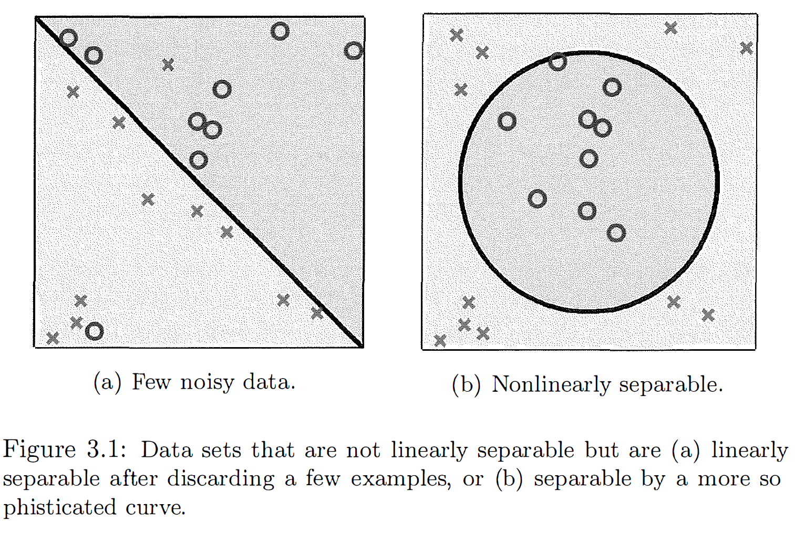

Loading required package: pacmanSTA5092Z EDA Lecture 5-6
EDA Lecture 5-6 - Checking your data - Checklist
- Formulate your question
- Check your data
- Automate your project workflow
Workflow - scripts/projects
- Do not let R to auto save your workspace, go to options in Rstudio, set “save workspace to .RData on exit” option to “never”. This will enforce you to record every step you take while dealing with data and analysis.
- Create an RStudio project for each data analysis project.
- Keep data files there.
- Write your R scripts in an R markdown file. Keep scripts there.
- Start your script with the packages that you need.
- Do not include install.packages code in a script you share.
- Save your outputs (plots and cleaned data) there.
- Only ever use relative paths, not absolute paths. Because they hinder sharing: no one else will have exactly the same directory configuration as you.
- DO NOT PRINT EVERYTHING!!!
- R Studio projects keep all your files in a specified folder, data, output, Rmd or R files, etc.
- When you shut down R, you can easily go to your specified folder and open .Rproj file and all your work will be together.
- For graphics, you can print your plots in separate pdf files with ggsave() function and all will be saved in your project folder.
We will go through these using the Boston, Ames, World Happiness Datasets. Before moving on, we will look at the code chunk options:
echo: Show (TRUE) or hide (FALSE) the source code in output,eval: Execute (TRUE) or skip (FALSE) the code,include: Include both code and output in the rendered document (FALSE hides both),warning: Show (TRUE) or suppress (FALSE) warnings,message: Show (TRUE) or suppress (FALSE) messages,results: “markup” (default), “asis”, “hide”, “hold”. Controls how results are displayed,cache: Cache results for faster re-rendering,error: Show errors in output (TRUE) or stop rendering (FALSE).
Libraries
Boston Dataset
1) Read in your data:
2) Run str() or glimpse()
'data.frame': 506 obs. of 13 variables:
$ crim : num 0.00632 0.02731 0.02729 0.03237 0.06905 ...
$ zn : num 18 0 0 0 0 0 12.5 12.5 12.5 12.5 ...
$ indus : num 2.31 7.07 7.07 2.18 2.18 2.18 7.87 7.87 7.87 7.87 ...
$ chas : int 0 0 0 0 0 0 0 0 0 0 ...
$ nox : num 0.538 0.469 0.469 0.458 0.458 0.458 0.524 0.524 0.524 0.524 ...
$ rm : num 6.58 6.42 7.18 7 7.15 ...
$ age : num 65.2 78.9 61.1 45.8 54.2 58.7 66.6 96.1 100 85.9 ...
$ dis : num 4.09 4.97 4.97 6.06 6.06 ...
$ rad : int 1 2 2 3 3 3 5 5 5 5 ...
$ tax : int 296 242 242 222 222 222 311 311 311 311 ...
$ ptratio: num 15.3 17.8 17.8 18.7 18.7 18.7 15.2 15.2 15.2 15.2 ...
$ lstat : num 4.98 9.14 4.03 2.94 5.33 ...
$ medv : num 24 21.6 34.7 33.4 36.2 28.7 22.9 27.1 16.5 18.9 ...Rows: 506
Columns: 13
$ crim <dbl> 0.00632, 0.02731, 0.02729, 0.03237, 0.06905, 0.02985, 0.08829,…
$ zn <dbl> 18.0, 0.0, 0.0, 0.0, 0.0, 0.0, 12.5, 12.5, 12.5, 12.5, 12.5, 1…
$ indus <dbl> 2.31, 7.07, 7.07, 2.18, 2.18, 2.18, 7.87, 7.87, 7.87, 7.87, 7.…
$ chas <int> 0, 0, 0, 0, 0, 0, 0, 0, 0, 0, 0, 0, 0, 0, 0, 0, 0, 0, 0, 0, 0,…
$ nox <dbl> 0.538, 0.469, 0.469, 0.458, 0.458, 0.458, 0.524, 0.524, 0.524,…
$ rm <dbl> 6.575, 6.421, 7.185, 6.998, 7.147, 6.430, 6.012, 6.172, 5.631,…
$ age <dbl> 65.2, 78.9, 61.1, 45.8, 54.2, 58.7, 66.6, 96.1, 100.0, 85.9, 9…
$ dis <dbl> 4.0900, 4.9671, 4.9671, 6.0622, 6.0622, 6.0622, 5.5605, 5.9505…
$ rad <int> 1, 2, 2, 3, 3, 3, 5, 5, 5, 5, 5, 5, 5, 4, 4, 4, 4, 4, 4, 4, 4,…
$ tax <int> 296, 242, 242, 222, 222, 222, 311, 311, 311, 311, 311, 311, 31…
$ ptratio <dbl> 15.3, 17.8, 17.8, 18.7, 18.7, 18.7, 15.2, 15.2, 15.2, 15.2, 15…
$ lstat <dbl> 4.98, 9.14, 4.03, 2.94, 5.33, 5.21, 12.43, 19.15, 29.93, 17.10…
$ medv <dbl> 24.0, 21.6, 34.7, 33.4, 36.2, 28.7, 22.9, 27.1, 16.5, 18.9, 15…3) Look at the top and the bottom of your data, does that make sense? Any rows appearing as NAs by mistake?
crim zn indus chas nox rm age dis rad tax ptratio lstat medv
1 0.00632 18 2.31 0 0.538 6.575 65.2 4.0900 1 296 15.3 4.98 24.0
2 0.02731 0 7.07 0 0.469 6.421 78.9 4.9671 2 242 17.8 9.14 21.6
3 0.02729 0 7.07 0 0.469 7.185 61.1 4.9671 2 242 17.8 4.03 34.7 crim zn indus chas nox rm age dis rad tax ptratio lstat medv
504 0.06076 0 11.93 0 0.573 6.976 91.0 2.1675 1 273 21 5.64 23.9
505 0.10959 0 11.93 0 0.573 6.794 89.3 2.3889 1 273 21 6.48 22.0
506 0.04741 0 11.93 0 0.573 6.030 80.8 2.5050 1 273 21 7.88 11.94) Did you check the total number of observations? n
[1] 506 135) Did you plot univariate summaries of the data (histograms,
density plots, boxplots)?

Saving 7 x 5 in image
Saving 7 x 5 in image
Saving 7 x 5 in image
Saving 7 x 5 in image







6) Did you consider correlations between variables
(scatterplots)?
crim zn indus chas nox rm age dis rad tax
crim 1.000 -0.200 0.407 -0.056 0.421 -0.219 0.353 -0.380 0.626 0.583
zn -0.200 1.000 -0.534 -0.043 -0.517 0.312 -0.570 0.664 -0.312 -0.315
indus 0.407 -0.534 1.000 0.063 0.764 -0.392 0.645 -0.708 0.595 0.721
chas -0.056 -0.043 0.063 1.000 0.091 0.091 0.087 -0.099 -0.007 -0.036
nox 0.421 -0.517 0.764 0.091 1.000 -0.302 0.731 -0.769 0.611 0.668
rm -0.219 0.312 -0.392 0.091 -0.302 1.000 -0.240 0.205 -0.210 -0.292
age 0.353 -0.570 0.645 0.087 0.731 -0.240 1.000 -0.748 0.456 0.506
dis -0.380 0.664 -0.708 -0.099 -0.769 0.205 -0.748 1.000 -0.495 -0.534
rad 0.626 -0.312 0.595 -0.007 0.611 -0.210 0.456 -0.495 1.000 0.910
tax 0.583 -0.315 0.721 -0.036 0.668 -0.292 0.506 -0.534 0.910 1.000
ptratio 0.290 -0.392 0.383 -0.122 0.189 -0.356 0.262 -0.232 0.465 0.461
lstat 0.456 -0.413 0.604 -0.054 0.591 -0.614 0.602 -0.497 0.489 0.544
medv -0.388 0.360 -0.484 0.175 -0.427 0.695 -0.377 0.250 -0.382 -0.469
ptratio lstat medv
crim 0.290 0.456 -0.388
zn -0.392 -0.413 0.360
indus 0.383 0.604 -0.484
chas -0.122 -0.054 0.175
nox 0.189 0.591 -0.427
rm -0.356 -0.614 0.695
age 0.262 0.602 -0.377
dis -0.232 -0.497 0.250
rad 0.465 0.489 -0.382
tax 0.461 0.544 -0.469
ptratio 1.000 0.374 -0.508
lstat 0.374 1.000 -0.738
medv -0.508 -0.738 1.000 Var1 Var2 value
1 crim crim 1.000
2 zn crim -0.200
3 indus crim 0.407
4 chas crim -0.056
5 nox crim 0.421
6 rm crim -0.219


7) Did you check for outliers? What is an outlier? Single
variable outlier or multivariate outlier? Why so important? What do we do? Throw away the samples? Man made sampling bias! #### 8) Did you identify missing values? #### 9) Did you check the units of all data points to make sure they are in the right range? #### 10) Did you try to identify any errors or miscoding of variables? #### 11) Did you consider plotting on a log scale or any other transformation? Use log transforms for ratio measurements. #### 12) For large data sets, subsample before plotting #### 13) Use color and size to check for confounding

Ames Dataset
Happiness Dataset
Class Exercises
Pokemon Dataset
Exercise 1
Select the first three columns of the pokemon dataset using their column names.
Exercise 2
Select all the columns of the pokemon dataset except “abilities”.
Exercise 3
Select all columns of the pokemon dataset that start with the character string “against”.
Exercise 4
Filter the rows of the pokemon dataset for against_bug \(>= 1\) and against_dark \(>= 1\).
Exercise 5
Arrange rows by a particular column, such as the against_bug.
Exercise 6
Select three columns from pokemon, arrange the rows by against_bug, then arrange the rows by against_dark.
Exercise 7
Create a new column called proportion, which is the ratio of height to weight of the pokemon.
Exercise 8
Compute the average damage that a pokemon can do against bug, apply the mean() function to the column against_bug, and call the summary value “ave_against_bug”. HINT: Use summarize().
Exercise 10
Obtain the same summary statistics for different types (Type1) of pokemon. HINT: Use group_by().